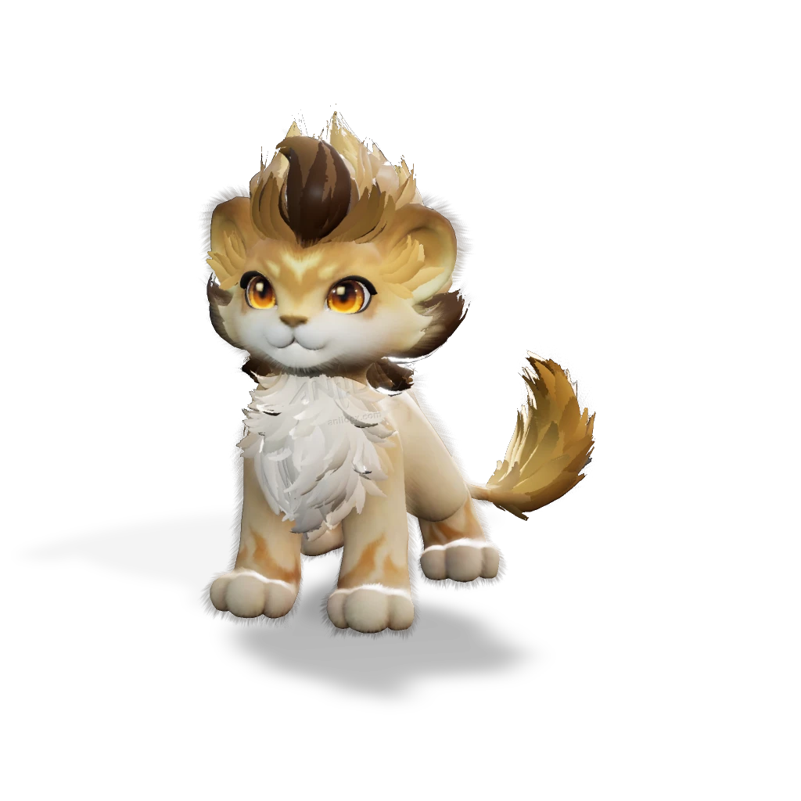

รายชื่อ Aniimo › #99998

สิงโตแสงตะวัน (Helion)
#99998ธาตุแสงLuminDPSTier S
พวกมันมักจะปกป้องเพื่อนของตนในยามวิกฤตด้วยความกระตือรือร้นและความมั่นใจ แสดงให้เห็นถึงพลังอันน่าทึ่ง
ดูรายละเอียดเต็ม ร่างพิเศษ และร่างเปล่งประกายค่าสถานะพื้นฐาน
| HP | 100 |
|---|---|
| ATK | 116 |
| P.DEF | 72 |
| M.DEF | 72 |
| REGEN | 90 |
| BREAK | 64 |
สกิล
| โจมตีปกติ | ATK แสง ใช้พลังแห่งแสงโจมตีเป้าหมายในระยะใกล้ |
| สกิล 1 | Light Bombardment แสง พุ่งจากกลางอากาศลงใส่เป้าหมาย ทำให้เกิดการระเบิดแสงศักดิ์สิทธิ์เมื่อลงสู่พื้น หากคุณมี แหวนแห่งสุริยะทองคำ ดาเมจจากสกิลนี้จะเพิ่มขึ้น 30% |
| สกิล 2 | Holy Roar แสง ปล่อยเสียงราชสีห์คำรามที่อัดแน่นไปด้วยพลังศักดิ์สิทธิ์เพื่อโจมตีเป้าหมาย เมื่อโจมตีโดน จะเพิ่มดาเมจแสงของผู้ร่าย 6% สแต็กได้สูงสุด 3 ครั้ง เป็นเวลา 20 วิ. สถานะ [สุริยะทรงกลด] จะเสริมพลังเอฟเฟกต์สกิลนี้โดยทำให้ติด 3 สแต็กทุกครั้ง |
| สกิล 3 | Holy Storm แสง หมุนตัวแล้วกระโดดขึ้นกลางอากาศ ก่อพายุที่ดูดเป้าหมายเข้าหาศูนย์กลางพร้อมสร้างดาเมจทำลายสูงตามเลเวลของแอนีโม [มงคลสุริยัน] จะเสริมเอฟเฟกต์ของสกิล โดยการโจมตีครั้งสุดท้ายจะทำให้มึนงงเพิ่มเติมเป็นเวลา 1 วิ. |
| สกิล 4 | Sun-Kissed แสง อาบแสงตะวันและฟื้นฟู EP 20 หน่วย หากมี [วงแหวนสุริยัน] จะฟื้นฟู EP เพิ่มอีก 5 หน่วย |
| อัลติเมต | Helios’ Judgment แสง ปลดปล่อยสุริยันพิพากษาใส่เป้าหมายใกล้เคียง ทำดาเมจมหาศาล วิวัฒนาการเป็นราชสีห์สุริยัน เพิ่มดาเมจตัวเอง 15% จนกว่าจะออกจากการต่อสู้ และได้รับแหวนสุริยันทองคำ |
Held Item ที่แนะนำ
- Ferocious Fang แอนีโมที่ติดตั้งจะได้รับพลังโจมตีเพิ่ม 0.7 หน่วยต่อเลเวล
งานใน Homeland
งานธาตุแสง Lv.3, ขนของ Lv.3